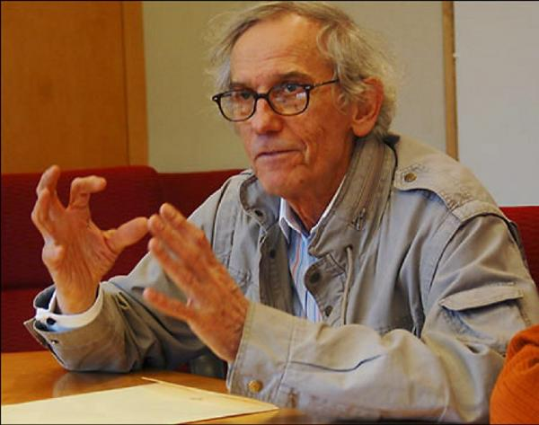
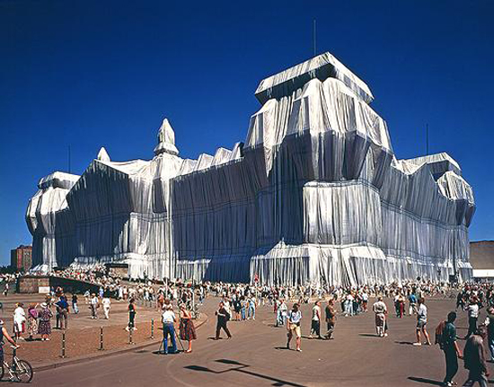
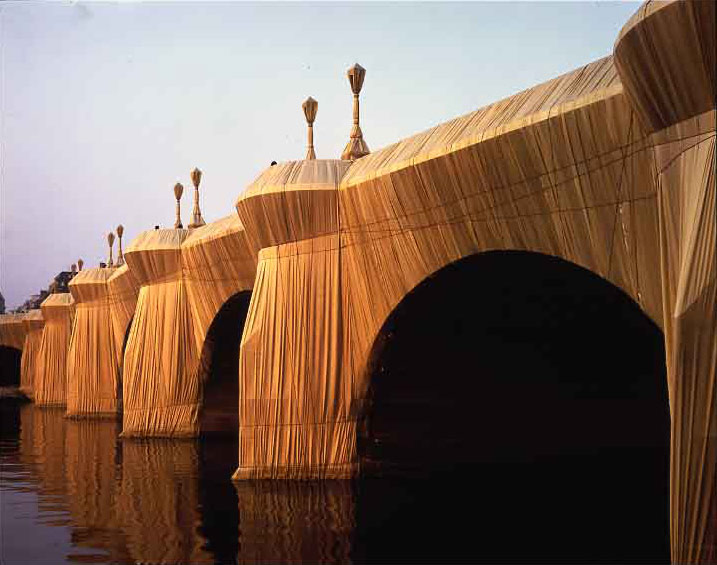

CHRISTO
Installation Art

Les installations, en tant que concept, se sont surtout développées à partir des années 1960, même si l'on peut trouver des prémices de cette forme d'art avec les ready-made de Marcel Duchamp (dès 1912) ou chez certains artistes surréalistes ou Dada comme par exemple Kurt Schwitters et son Merzbau. Il y a trois types d'installation : mobile (dite remontable), permanente (dite fixe) et éphémère (dite temporaire). La première installation éphémère, conçue donc pour être détruite après une brève exposition, a été réalisée en 1956 à Barcelone par le poète catalan Joan Brossa. Au Japon, le groupe Gutai s'exprimait à travers des performances néodadaïstes et des installations. En 1963 Wolf Vostell expose à la Galerie Smolin de New York une Installation temporaire appelée 6 TV De-coll/age1. Des artistes du groupe Fluxus et lettristes s'exprimèrent eux-aussi à travers des installations temporaires, plus ou moins provocatrices.
En fonction de leurs modes et du dispositif, les installations mettent en scène, dans un arrangement qui a sa propre dynamique, des médias traditionnels comme la peinture, la sculpture, la photographie, mais le plus souvent des médias plus récents comme les projections (film, vidéo), le son, l'éclairage. Un artiste comme Nam June Paik fut le premier à utiliser une technique mixte, associant téléviseur, vidéo, sons et lumières. Christo et Jeanne-Claude, communément Christo, est le nom d'artiste sous lequel est identifiée l'œuvre commune de Christo Vladimiroff Javacheff, né le 13 juin 1935 à Gabrovo en Bulgarie, et de Jeanne-Claude Denat de Guillebon, née également le 13 juin 1935 à Casablanca au Maroc et morte le 18 novembre 2009 à New York. Ce couple d'artistes contemporains (« qui emballe la géographie et l'histoire ») s'est rendu célèbre par ses objets empaquetés. Naturalisés américains, ils ont vécu à New York dans le quartier de SoHo.

Ils mettent en scène toiles, câbles et structures métalliques, pour créer des œuvres éphémères qui durent deux semaines en moyenne. Leur art consiste en l'« empaquetage » de lieux, de bâtiments, de monuments, de parcs et de paysages. Certaines de leurs œuvres pionnières se rapprochent du Land Art en raison de leur gigantisme, ou plus généralement, de leur réalisation hors des traditionnels sites ; atelier, galerie, musée. Le couple refuse cependant l'appellation « Land Art »3, précisant que ses interventions ne sont jamais réalisées dans le désert: un argument assez discutable au regard de la diversité des pratiques de ce mouvement artistique qui perdure jusqu'à aujourd'hui4. Ils s'intéressent à la structure, à l'usage, à la beauté ou à la dimension symbolique des lieux sur lesquels ils interviennent temporairement, qu'ils « révèlent en cachant ».

Les Christo réalisent un travail monumental et éphémère, c’est ce qui marque leur originalité, prendre autant de temps uniquement pour un résultat qui ne durera qu'un court laps de temps. Selon Albert Elsen, « aucun artiste de l’histoire n’a passé autant de temps à voyager pour se présenter lui-même ainsi que son œuvre. Le succès de ses projets auprès du public […] est dû pour une part non négligeable à sa facilité de contact et à ses dons naturels de pédagogue. Il fut le premier créateur à étudier de lui-même l’impact tant humain qu’environnemental de ses projets. La plupart des artistes pensent que l’éducation du public prend trop de temps au détriment de leur travail ». Pour Christo, « l’interactivité verbale avec le public » fait partie intégrante de sa créativité. Toujours selon lui, « son art est le résultat d’une réflexion et d’une intuition esthétique imposée à un environnement naturel et construit »5.